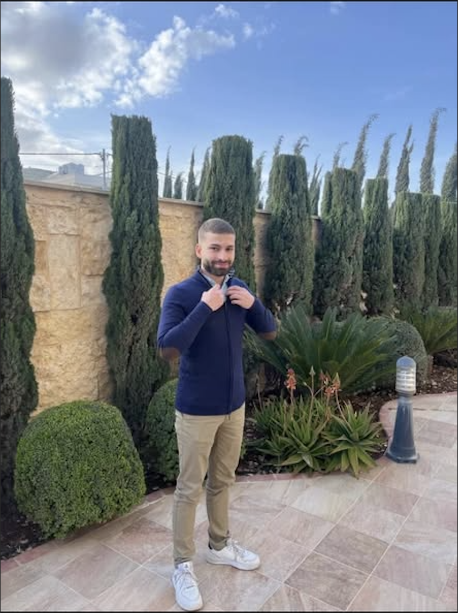

What I Do
Website Development
I'm currently a front-end devloper that builds great websites with powerful UI/UX.
Personal Website
I'm Saifeddin Saleh, a 20 year old student pushing it hard towards improving myself.

About Me
The best personal websites are clear, confident, and unmistakably human. I like combining structure and personality so visitors understand who you are within seconds.
What I Do
Website Development
I'm currently a front-end devloper that builds great websites with powerful UI/UX.
Education
BSc Computer Engineering
Currently pursuing my Bachelor's degree at Birzeit University.
Strengths
Front-end Development
Great experience with HTML, CSS, Bootstrap, and TailwindCSS.
Goal
Full Stack Development and AI
Looking forward to keep improving my Web-Development skills, NLP, AI and Machine Learning.
Selected Work
My CV highlights a mix of programming, systems thinking, problem solving, and hands-on technical projects that reflect how I like to learn by building.
01
Projects from my GitHub that show how I work with data, structure findings, and turn raw information into clearer insights.
02
A hardware-focused project from my CV that reflects my interest in computer architecture, logic design, and how systems work under the hood.
03
My data structures and algorithms work shows steady problem solving, consistency, and a strong focus on improving core CS fundamentals.
Process
Based on my CV, I’m building across software, problem solving, and technical systems while growing a strong foundation through real projects and consistent practice.
Step 01
Computer Engineering Student
I’m Saifeddin Saleh, a student focused on learning deeply, building practical projects, and improving my technical range.
Step 02
Active Across Platforms
My CV connects my GitHub, LinkedIn, and LeetCode, showing both project work and ongoing problem-solving practice.
Step 03
Based in Ramallah
I’m based in Ramallah, Palestine, and I’m using this site as a personal space to present my work, skills, and growth.